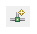

Target Connections
Target connections view allows users to configure multiple remote targets. It shows connected targets and gives you an option to add or delete target connections.
SDK establishes target connections through the Hardware Server agent. In order to connect to remote targets, the hardware server agent must be running on the remote host, which is connected to the target.
The target connection has been extended to all SDK utilities that deal with targets at runtime.
Creating a New Target Connection
The user can configure the remote target details by adding a new connection in the Target Connections view.
To create new target connection:
-
In the Target Connections window of the SDK interface, click the
Add Target Connection
button.

The Target Connection Details dialog box opens.
-
In the Target Name field, type a name for the new remote connection.
-
Check “Set as default target” checkbox to make this target as default. SDK will use default target for all the future interactions with the board.
-
In the Host field, type the name or IP address of the remote host machine. This is the machine that is connected to the target and hw_server is running.
-
In the Port field, enter the port number on which hw_server is running. By default, hw_server runs on 3121.
Assumptions
-
Ensure that the target(board) is connected to the remote host.
-
Launch hw_server manually on the remote as mentioned below.
-
Take a shell on the remote host.
-
Source the setup scripts
C:/Xilinx/SDK/2014.1/settings64.bat (or) /opt/ Xilinx/SDK/2014.1/settings64.csh
-
hw_server
Copyright © 1995-2014 Xilinx, Inc. All rights reserved.